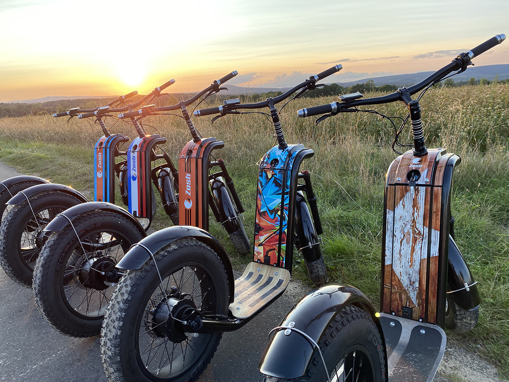

Dans un monde où la mobilité durable prend de plus en plus d'importance, la trottinette électrique se démarque comme un moyen de transport pratique et écoresponsable. Dans cet article, nous allons explorer les raisons pour lesquelles opter pour une trottinette électrique peut être bénéfique pour vous et pour l'environnement.
Les Avantages de la Trottinette Électrique
Praticité et Flexibilité
La trottinette électrique est idéale pour les trajets courts. Que ce soit pour aller au travail, à l'école ou faire des courses, elle vous permet d’éviter les embouteillages et de trouver facilement des places de stationnement. De plus, elle est légère et facilement pliable, ce qui la rend simple à transporter.
Économie et Écologie
Utiliser une trottinette électrique est une alternative économique par rapport à la voiture. Vous évitez les frais de carburant, de stationnement et d'entretien. En outre, ce mode de transport produit moins de CO2, contribuant ainsi à réduire votre empreinte carbone.
Comment Choisir la Bonne Trottinette Électrique ?
Lorsque vous envisagez d'acheter une trottinette électrique, il est important de considérer les différents modèles disponibles pour répondre aux besoins de tous les utilisateurs. Que vous soyez un adulte cherchant à améliorer votre trajet quotidien ou un parent souhaitant offrir une option de mobilité ludique et sûre à votre enfant, il existe des trottinettes adaptées à chaque groupe d'âge. Les modèles pour adultes sont souvent conçus pour des performances supérieures, avec une meilleure autonomie et une vitesse plus élevée, tandis que les trottinettes pour enfants sont généralement plus légères, plus faciles à manœuvrer et équipées de caractéristiques de sécurité accrues. Pour en savoir plus, consultez notre guide d'achat des trottinettes électriques, ainsi que nos pages dédiées aux trottinettes pour adultes et aux trottinettes pour enfants. N'oubliez pas de visiter des sources fiables comme l'ADEME pour des informations complémentaires sur les options de mobilité durable.